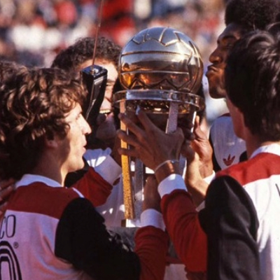

Jogadores Fantásticos

Zico
Arthur Antunes Coimbra notabilizou-se como o líder da vitoriosa trajetória do Flamengo nas décadas de 1970 e 1980.
com ápice nas conquistas da Copa Libertadores da América e da Copa Intercontinental pela equipe carioca, além dos títulos do Campeonato Brasileiro de 1980, 1982, 1983 e da Copa União de 1987.
É considerado por muitos especialistas, profissionais do esporte e, em especial, pelos torcedores do Flamengo, o maior jogador da história do clube, e um dos maiores futebolistas brasileiros desde Pelé.
Mais que um exímio batedor de faltas, Zico apresentava dribles fáceis em seu repertório futebolístico, excelente visão de jogo e uma inteligência acima do normal.
Gabi
Na primeira final em jogo único na história da Taça Libertadores da América, o Flamengo perdia para o River Plate até os 45 minutos da etapa final. Foi quando Gabriel, em cinco minutos, marcou os dois gols da heroica virada; gols estes que deram o bicampeonato ao Flamengo após 38 anos de espera, chegando a marca de 40 gols na temporada.
Na final da Libertadores de 2022, Gabriel marcou o gol que decidiu o 3º título ao Flamengo na competição. Com a camisa rubro-negra, Gabriel marcou nas decisões de Libertadores de 2019, 2021 e 2022.
Após a aposentadoria do meia Diego Ribas, Gabigol foi escolhido no dia 13 de novembro para ser o novo camisa 10 do Flamengo.
Gabriel alcançou uma expressiva marca com o manto Rubro-Negro em 1 de julho, contra o Fortaleza, no Maracanã, ele abriu o placar e alcançou 150 gols e é o nono maior artilheiro da história do Flamengo.
Arrascaeta
Giorgian Daniel De Arrascaeta Benedetti é um futebolista uruguaio que atua como meio-campista.
Foi contratado pelo Flamengo no dia 8 de janeiro, numa negociação histórica. O valor negociado foi de 15 milhões de euros (R$ 63,7 milhões), sendo, até então a transferência mais cara da história do futebol brasileiro.
Arrascaeta foi muito importante na virada que o Flamengo fez na final da libertadores, ao proporcionar o passe que gerou o empate no final do segundo tempo onde 3 minutos depois ocorreu a virada e o Flamengo se sagrou campeão.
Pelo Flamengo em 2022, Arrascaeta fez 56 jogos, anotou 13 gols e deu 19 assistências. Com a camisa rubro-negra, ele conquistou a Libertadores e a Copa do Brasil nesta temporada.
Éverton Ribeiro
Foi o autor do gol mais bonito do Brasileirão de 2018 e do Brasileirão de 2020, além de ser eleito o craque da galera do Brasileirão 2019.
No dia 23 de setembro (2021), na vitória de 2–0 sobre o Barcelona de Guayaquil nas semifinais da Libertadores, Éverton Ribeiro tornou-se o segundo jogador com mais partidas pelo Flamengo na competição, com 36.
Everton deu o passe para o gol de Gabigol na final da Libertadores, que acabou virando o gol do titulo com o fim da partida com o placar de 1 a 0 para o Flamengo contra o Athletico Paranaense
Leandro
Ambidestro, é considerado por alguns autores um dos maiores laterais brasileiros de todos os tempos. Em 1982, foi eleito Bola de Prata da revista Placar.
É, ao lado de Carlinhos "Violino", um dos dois únicos jogadores que defenderam somente a camisa do Flamengo em toda a sua carreira.
Rubro-negro de coração, foi um lateral-direito muito técnico, que apoiava bastante o ataque, mas que também marcava atrás com eficiência. Participou da era gloriosa do Flamengo, que sob o comando de Zico, conquistou no início dos anos 80 três Campeonatos Brasileiros, a Copa União, a Copa Libertadores da América de 1981 e a Copa Intercontinental de 1981.
Júnior
Como jogador, era ambidestro e polivalente, bom marcador e grande distribuidor de jogadas, independente da posição. A facilidade para jogar bem com as duas pernas o permitiu atuar como lateral-esquerdo, direito, volante e meio-campista.
Júnior participou de 508 vitórias, 212 empates e 156 derrotas, marcando 78 gols. Em 1981, foi eleito o 3º Melhor Jogador da América do Sul.
Em 1989, aos 35 anos e a pedido de seu filho, que nunca o vira jogar pelo Flamengo, Júnior voltou para comandar a equipe rubro-negra nas conquistas da Copa do Brasil de 1990, o Campeonato Estadual de 91 e o Brasileirão de 92.
FAQ
- Qual o maior jogador do Flamengo?
- Zico. Mas é possível considerar Gabi bem próximo desse posto.
- O Brasileirão de 87 é do Flamengo ?
- Sim, não há dúvidas. Campeonato ganho dentro de campo. Quem fala ao contrário só tem título imaginário doado pela CBF.
- Porque o urubu é o símbolo do Flamengo?
- O mascote do Flamengo foi adotado em resposta a uma provocação racista que as outras torcidas faziam com o time, que tinha grande número de negros entre os torcedores. Quando o time entrava em campo, as torcidas adversárias gritavam “urubu, urubu”
- Quem são os três maiores artilheiros da história do Flamengo?
- Zico, Dida e Henrique
Números
Goleiros
156Defensores
579Meias
1090Atacantes
978- 

Contato

- thayekovic@gmail.com
- +55 21 99999-8888
- Rua dos Urubus, nº 100
- Rio de Janeiro - RJ